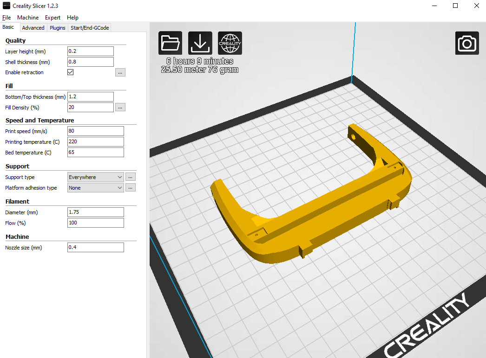

1. Halo
The Halo is the center piece of the Triton on which everything else attaches to it.
The Halo also takes the longest to 3d print (~6 hours). The settings I used to 3d print
the Halo are listed below.
Note: make sure the Halo is printed upside down (lens port should face updward)

| Slicer Settings: |
| Layer Height |
0.2mm |
| Infill |
20% rectilinear |
| Nozzle temp |
220 C |
| Bed temp |
65 C |
| Supports |
Everywhere, 15% Infill |
| Platform Adhesion |
None or raft |
Removing supports:
The Halo should be printed with supports enabled everywhere. After the print is done
they can be manually removed with an exacto knife. Removing the supports is a straightforward
process just remain patient. Supports are printed within inside the halo (image to far right).
They're fairly difficult to remove so it might take a few passes to scoop out the filament with
an exacto knife.
Note: you can use a higher infill % for the supports to reduce some of the etching